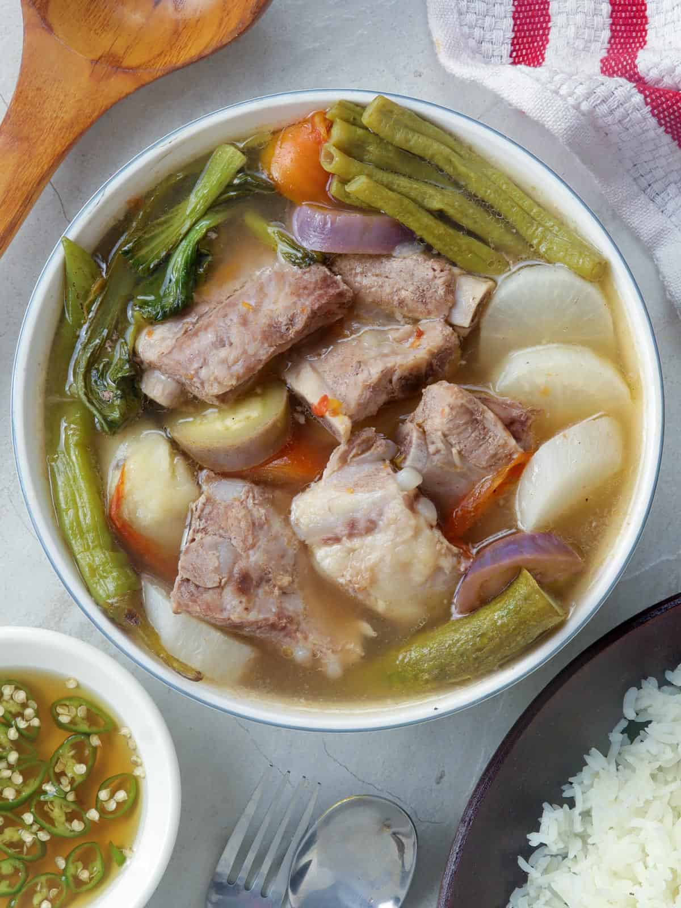
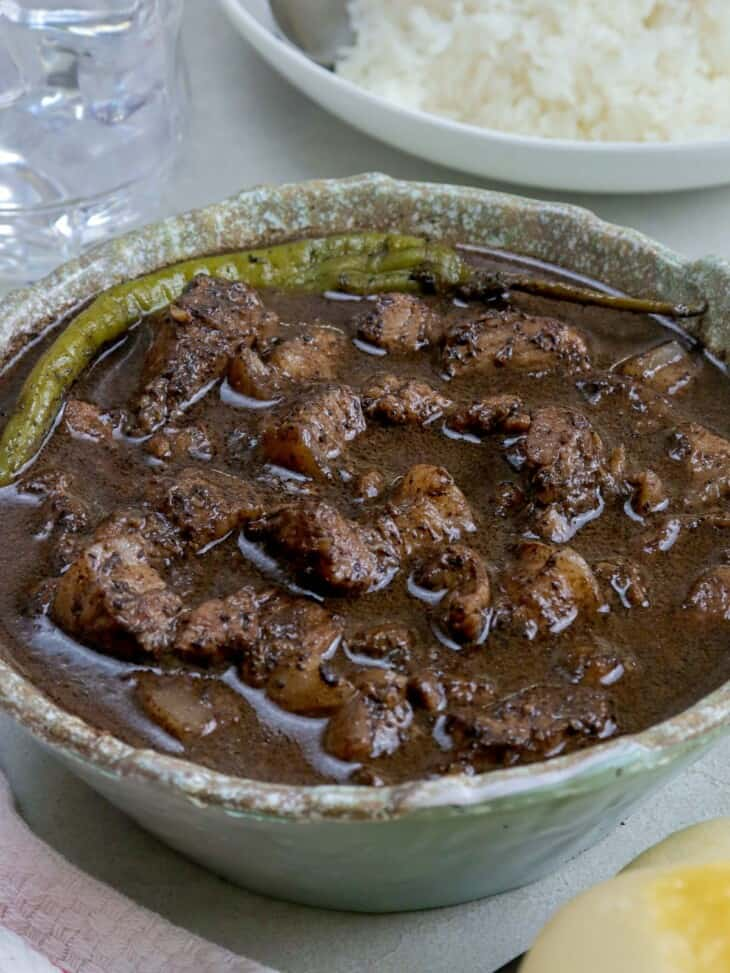
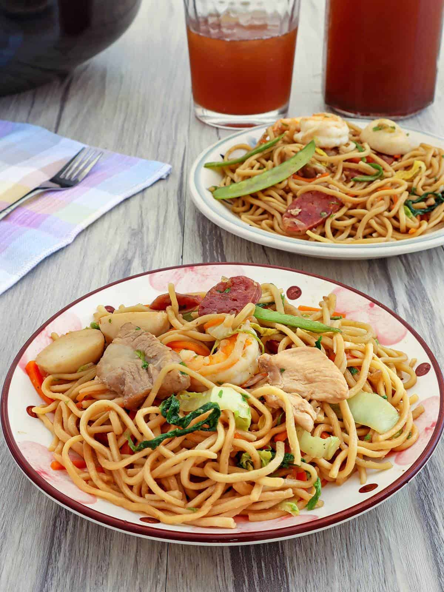
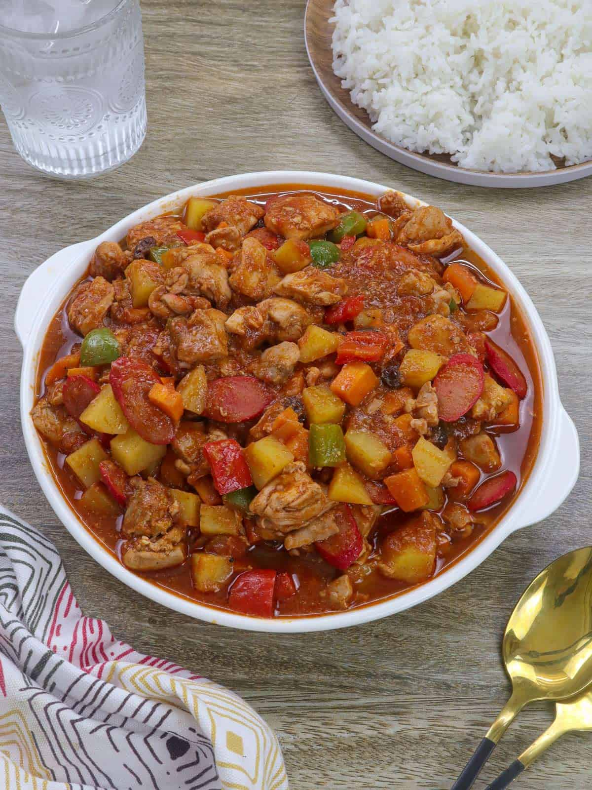
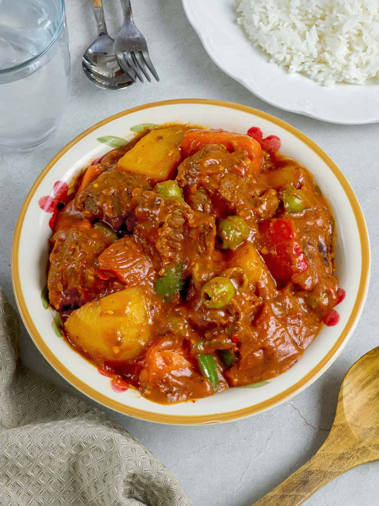

| Sinigang na Baboy | Dinuguan | Pancit Canton | Menudo | Caldereta |
|---|---|---|---|---|
|

It's a Filipino soup or stew characterized by its sour and savory taste. It is most often associated with tamarind, although it can use other sour fruits and leaves as the souring agent. It is one of the more popular dishes in Filipino cuisine. The soup is usually accompanied by rice. |

It's a Filipino savory stew usually of pork offal and/or meat simmered in a rich, spicy dark gravy of pig blood, garlic, chili, and vinegar. |

Or literally translated as "cantonese noodles" is the Filipino interpretation of Chinese stir-fried noodles. This comfort food is wildly popular and is really easy and quick to make at home. |

is a traditional stew from the Philippines made with pork and sliced liver in tomato sauce with carrots and potatoes. Unlike the Mexican dish of the same name, it does not use tripe or red chili sauce. |

It's a Filipino soup or stew characterized by its sour and savory taste. It is most often associated with tamarind, although it can use other sour fruits and leaves as the souring agent. It is one of the more popular dishes in Filipino cuisine. The soup is usually accompanied by rice. |